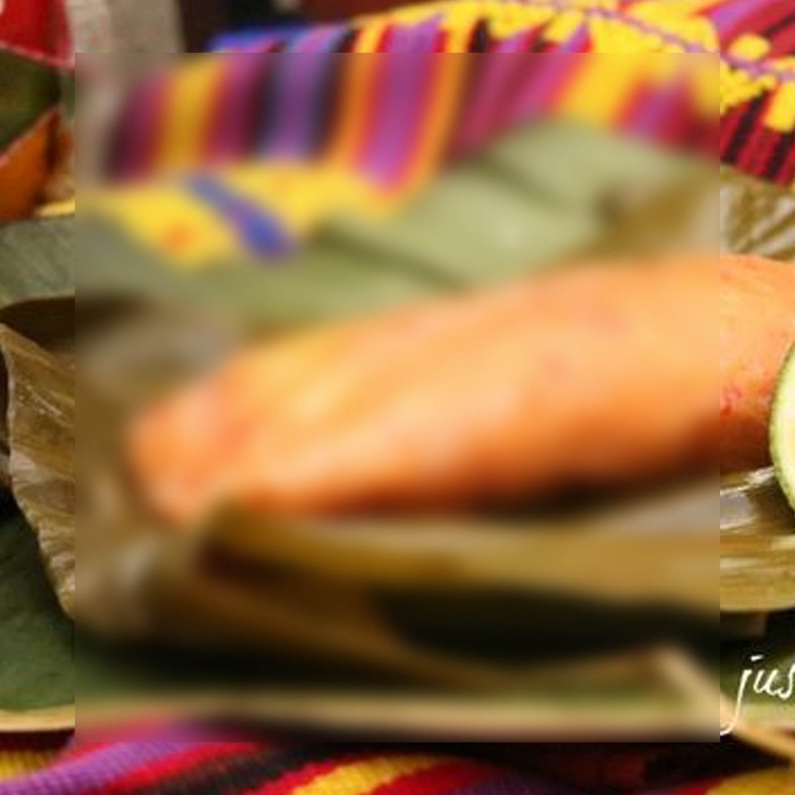
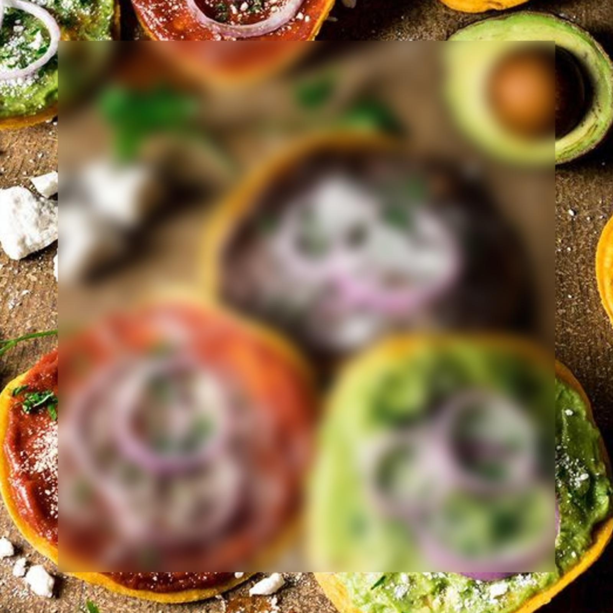
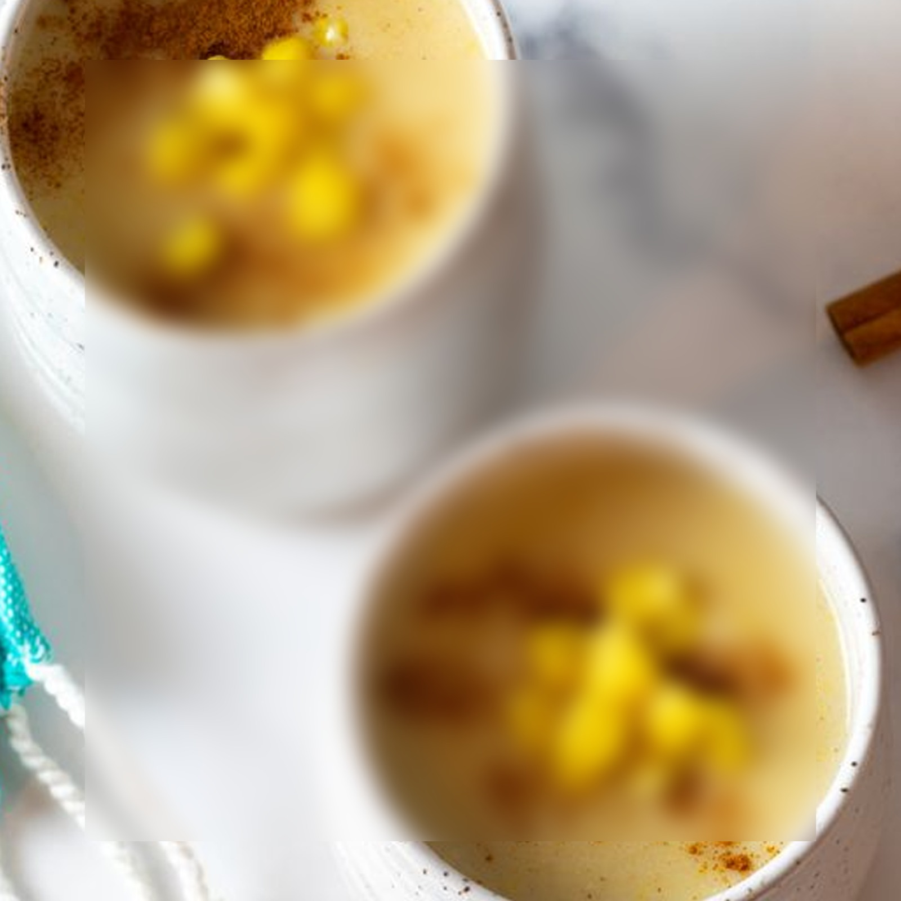
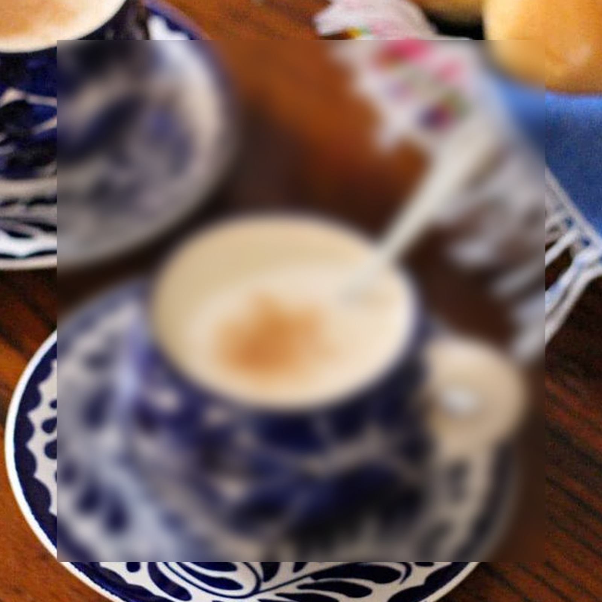
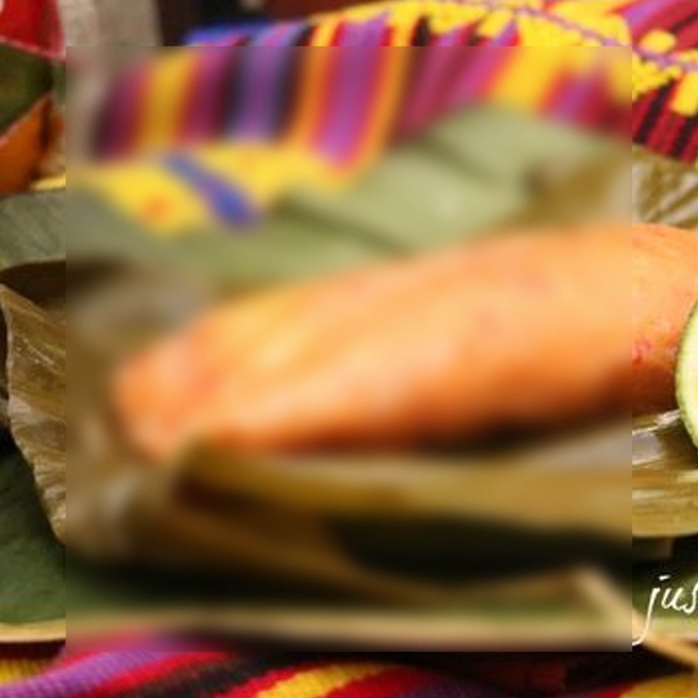
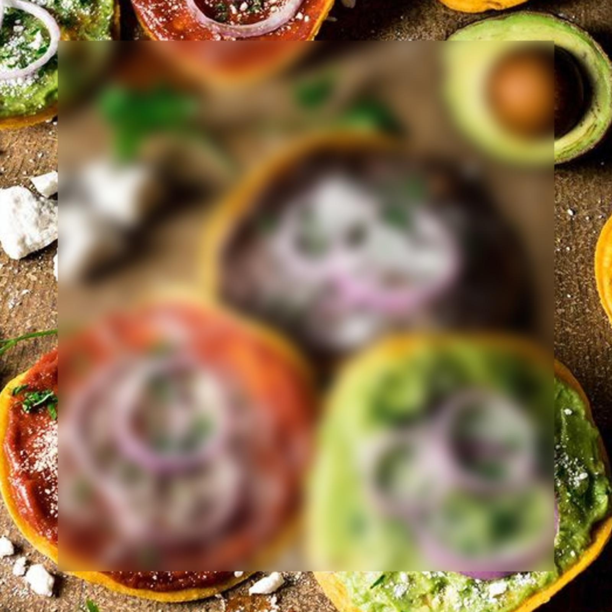
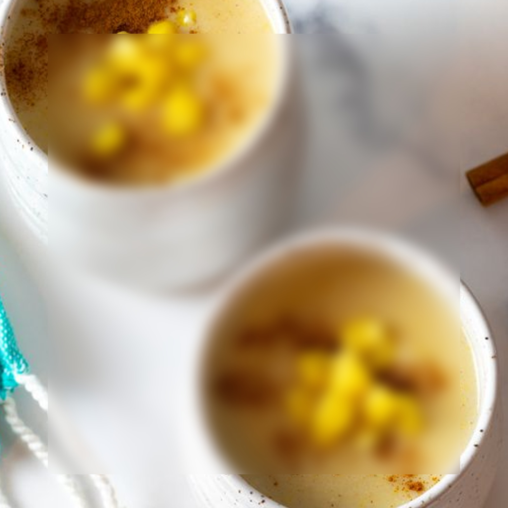
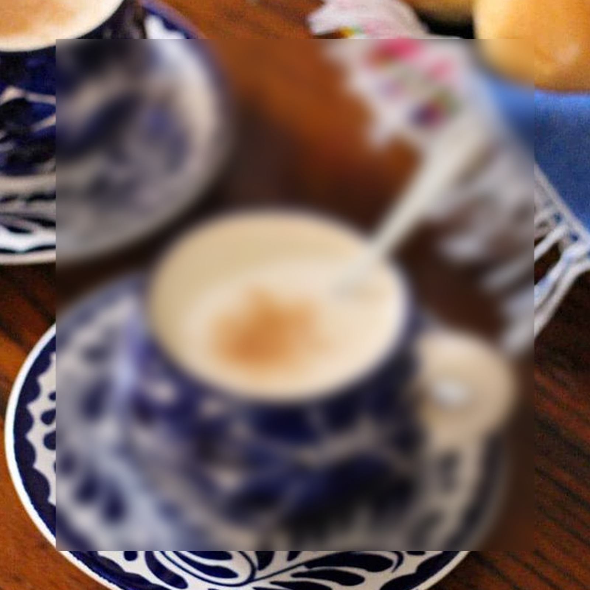

¿Qué se te antoja hoy?
Mole
Fácil / 20 minutos

Paches
Medio / 30 minutos
Tostadas
Fácil / 10 minutos
Atolde elote
Fácil / 15 minutos
Atol blanco
Fácil /15 minutos
Fácil / 20 minutos
Medio / 30 minutos
Fácil / 10 minutos
Fácil / 15 minutos
Fácil /15 minutos
Ingredientes
6 plátanos cortados en rodajas largas, previamente fritos.
2 onzas de ajonjolí tostado.
2 onzas de pepitoria tostada.
15 tomates bien maduros.
2 chiles pasas.
1 raja de canela.
2 champurradas.
8 onzas de chocolate en tableta.
2 onzas de ajonjolí para la decoración.
Preparación
Rodajar los plátanos, ni muy gruesos ni muy delgados.
Freír en un sartén las rodajas de plátano.
En una olla, colocar los tomates ya cortados en cuatro, así mismo, los chiles pasas y la canela.
Cocer a fuego lento y dejar enfriar.
Retirar la cascara de los tomates.
Dorar las especias, primero debe ser el ajonjolí y luego la pepitoria.
Agregar los tomates, chiles pasa, canela, ajonjolí, pepitoria, y las champurradas y licuar.
Verter el recado anterior en una olla de tamaño medio.
Añadir las tabletas de chocolate y dejar hervir a fuego lento.
Mover la mezcla constantemente hasta que el chocolate esté fundido completamente.
Agregue los plátanos fritos para que absorban el sabor a la salsa y dejar enfriar.
Al servir se puede decorar con ajonjolí dorado a cada plato.
Ingredientes
8 libras papa.
1 taza aceite.
½ libra miga pan francés frío.
2 libras tomate.
½ libra miltomate.
1 cucharada pepitoria.
3 chiles guaque.
3 panes franceses.
Sal al gusto.
1 pollo.
3 manojos hojas para envolver.
Cibaque.
Preparación
Primero, cocinar las papas en agua con sal, pelarlas después de cocinadas.
Aún calientes, machacar para que quede un puré con pedazos de papa entera.
Agregar manteca o aceite.
Luego, incorporar miga de pan hecha a base de pan francés remojado en agua, exprimidos y molidos.
Agregar el recado ya colado: asar el tomate y miltomate.
Tostar la pepitoria, chile guaque y pan francés y licuar junto al tomate y miltomate.
Además, agregar el miltomate disuelto en agua.
Entonces, colar y cocinar.
Sazonar con sal.

Ingredientes
Tortillas delgadas para freír o bien, las tostadas que venden en el supermercado
Aceite de oliva
Perejil
Queso seco rayado
Cebolla en rodajas finas
Sal
Pimienta
Salsa roja, frijoles volteados o guacamol al gusto
Guacamol
5 aguacates
½ cebolla finamente picada
1 cucharadita de orégano
2 limones
Salsa Roja
1 diente de ajo
6 tomates
1 chile dulce
1 cebolla
Preparación
Guacamol
Primero, colocar la pulpa del aguacate en un recipiente hondo.
Machacar el aguacate hasta hacer puré.
Después, mezclar con la cebolla en pedacitos, jugo de limón y orégano.
Agregar sal y pimienta al gusto.
Salsa Roja
Poner a hervir los tomates, la cebolla, el ajo y el chile pimiento en 3 tazas de agua.
Cuando estén cocidos retirar la olla del fuego y dejar enfriar.
Licuar todos los ingredientes con el ajo y un poco de cilantro y pasar por un colador.
En un sartén grande calentar una cucharadita de aceite, agregar la salsa, un toque de consomé de pollo y sal al gusto.
Hervir y mover con una paleta hasta que se ponga espesa.
Ingredientes
2 tazas de granos de elote amarillo.
4 1/2 tazas de agua fría.
1 raja de canela.
1 taza de azúcar.
1/2 cucharadita de sal.
Preparación
Pelar y desgranar los elotes, asegurarse de que el elote sea granudo, no tierno, luego licuarlo por pocos, con 3/4 de taza de agua, colarlo y agregar las otras 3 1/2 tazas de agua, la raja de canela y azúcar al gusto.
Poner a fuego lento la mezcla y dejar hervir moviendo constantemente para que no se pegue.
Cuando hierva, agregar la sal y seguir cocinando hasta que el elote esté cocido, (aproximadamente 10 minutos).
Servirlo caliente rociado con canela en polvo.
Ingredientes
1 taza de masa de maíz.
3/4 de taza de agua.
1 cucharada de pepita en polvo.
1 cucharada de chile cobanero en polvo.
6 tazas de agua.
1 taza de frijol cocido.
Limón y sal al gusto.
Preparación
Colocar la masa en una olla con 4 o 6 tazas de agua, dependiendo del espesor deseado.
Poner a hervir por unos 5 minutos y moverlo constantemente para evitar que se pegue.
La forma de servirlo es la siguiente: en un tazón sirva el atol caliente, agréguele granos de frijol, una cucharada de chile, una de pepitoria y sal.
Por último se puede agregar limón al gusto.